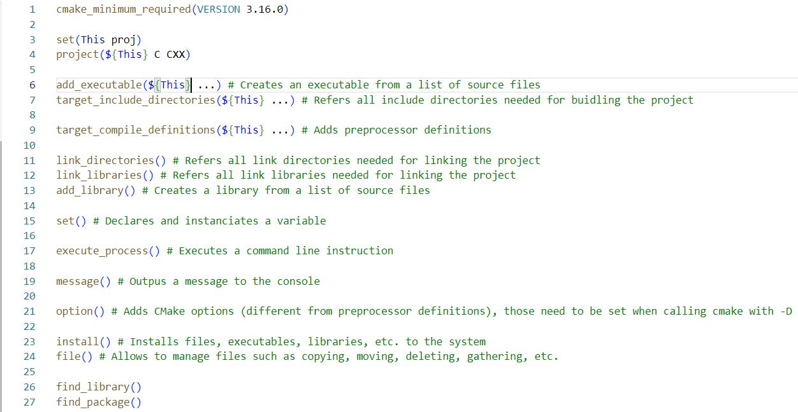

I want to keep track of all the things I learnt besides school. This page aims at keeping a record of basic tutos. (not finished yet ...)
CMAKE
In this section, I want to go over the fundamentals of CMake. CMake is a meta-build file. This means that cmake is a file that creates build files. CMake is really convenient ecause it is cross-platform and can generate build files for different IDEs. During my intership at Haption, I used it to generate Makefiles (Linux) and Visual Studio project files (Windows). A build file is a script file that contains all the instructions to build a project (e.g., compile, link, etc.). If you want to know more about building a project, you can check out my build page. To use CMake in your project, you first need to install it. Then you can follow along the next steps.
Project configuration
First off, start by creating a folder for your project. Then, create a CMakeLists.txt file in this folder at its root.
Secondly, create a build folder for your project (you can create one build folder for each platform or IDE). Here, I am assuming to be on a Linux machine.
You are ready to start modifying your CMakeLists.txt file !
Basic functionalities
The screenshot below shows some of the most commonly used CMake "functions". To know what parameters are expected, you can refer to the CMake documentation.
This is not an exhaustive list of all CMake functions but I basically only used those for my project during my intership. It is important to know that CMake defines its own variables such as CMAKE_SOURCE_DIR, CMAKE_CURENNT_SOURCE_DIR, CMAKE_BINARY_DIR ... and they are surrounded by ${}.
Terminal commands
To build your project entirely through CMake, you need to do it in 2 times.
- 1. Config instructions
- 2. Build instructions
The list of argmuents is not exhaustive.
The list of argmuents is not exhaustive.